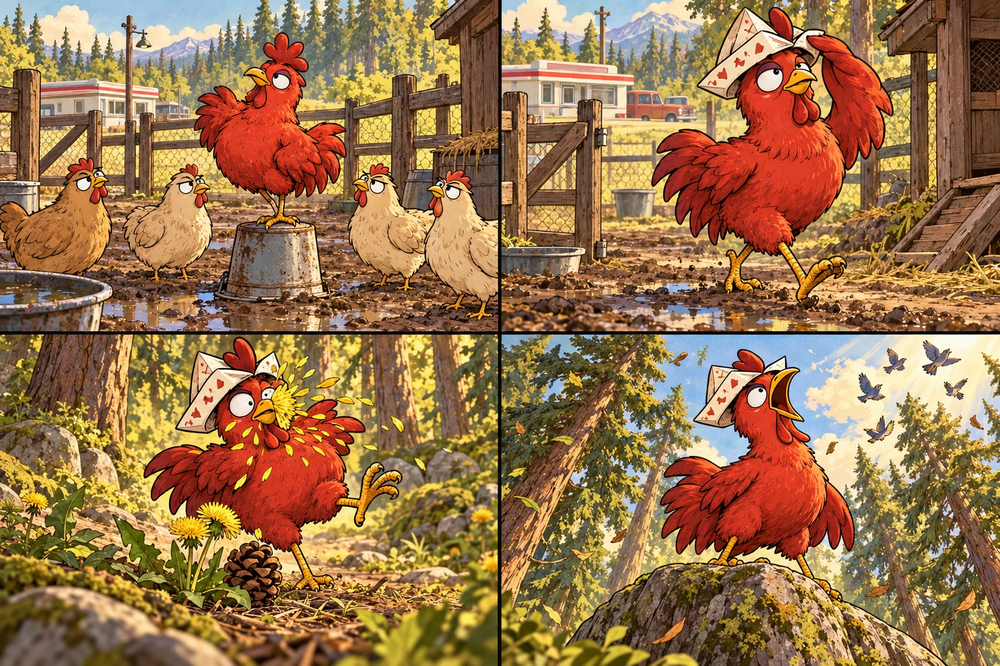
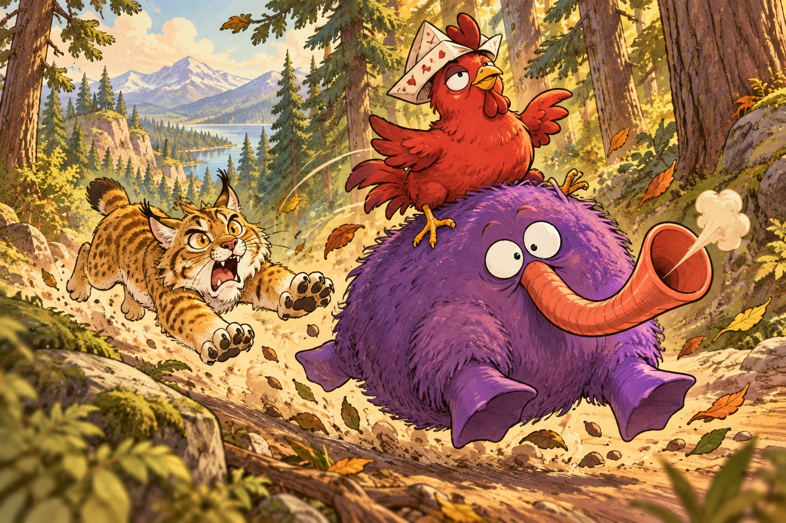
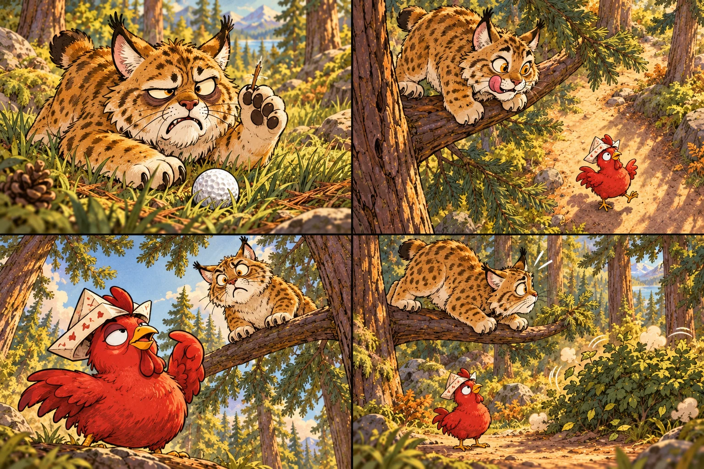
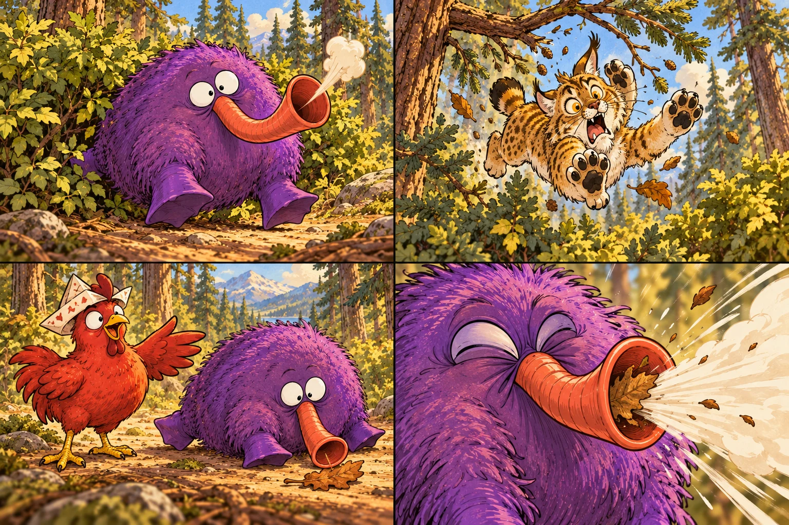
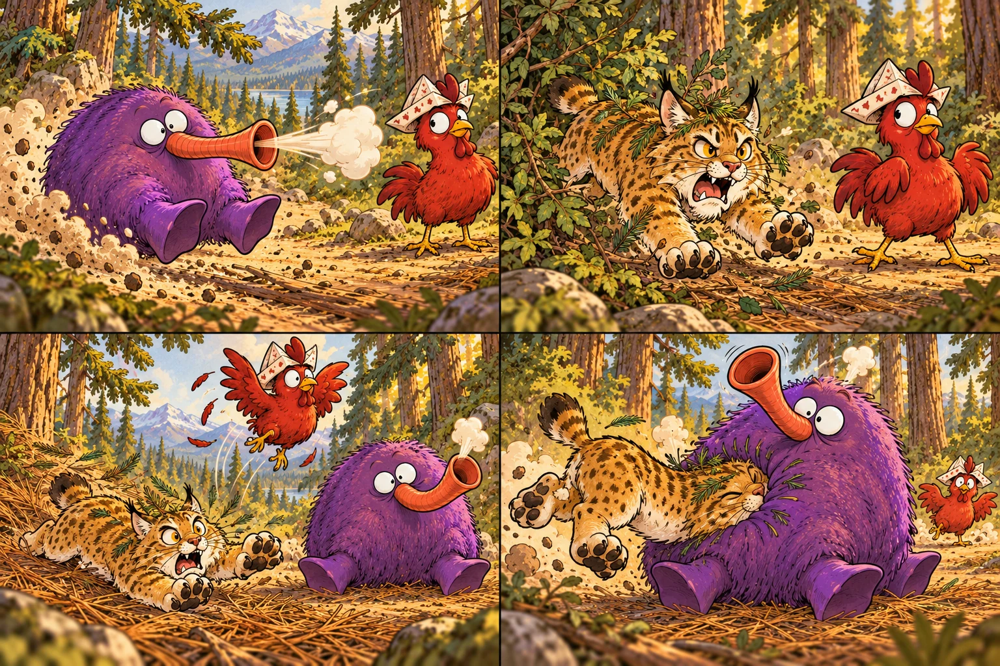
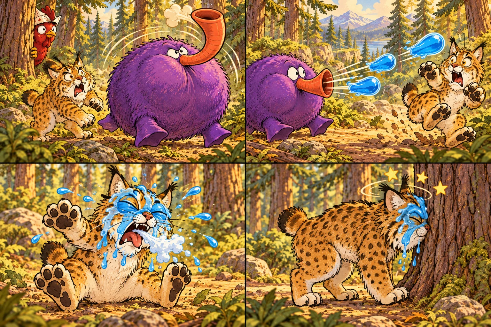
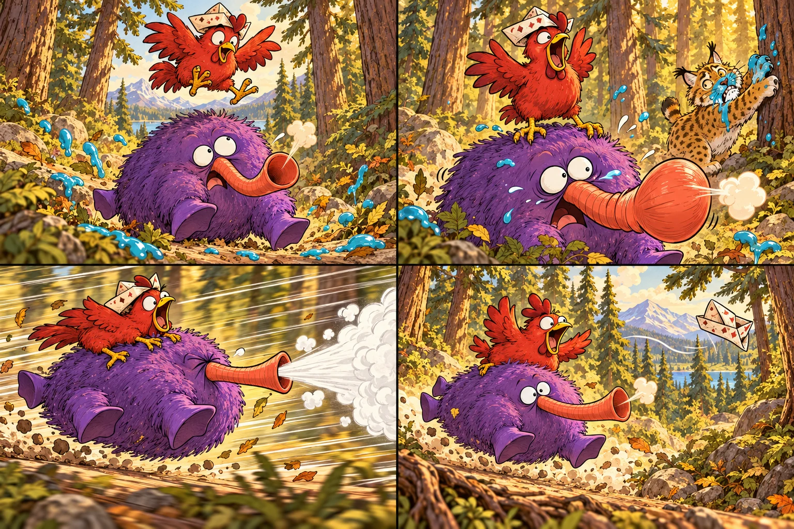
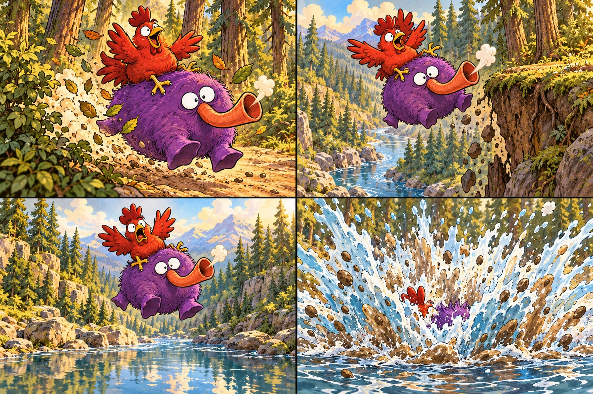
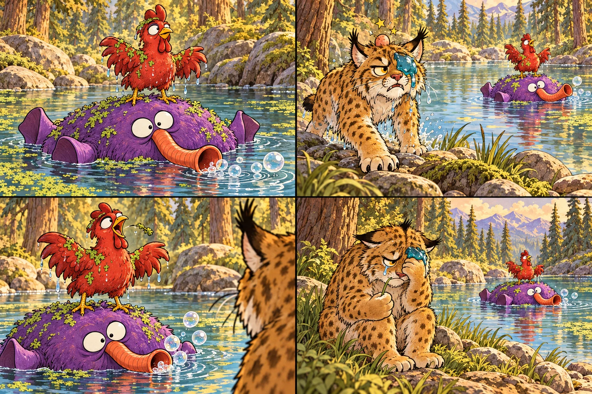

Barnaby was a red chicken with about three working brain cells. All three were convinced he was a world-famous pirate captain.
A wildly unqualified pirate adventure
One chicken. Three brain cells.
Absolutely no plan.

Three brain cells. One very big ambition.

Barnaby was a red chicken with about three working brain cells. All three were convinced he was a world-famous pirate captain.
The other chickens said he lived in a muddy pen behind a Denny’s. Barnaby didn’t care. He made a pirate hat from an old Arby’s coupon and marched into the woods to find treasure.
Ten feet into the woods, he was already lost. He pecked a dry pinecone and lost a fight with a dandelion.
KRAA-KAZOO!
Then he crowed at the top of his lungs. It sounded like an angry kazoo being dropped down an escalator.
Lunch has arrived. Lunch has opinions.

Rufus the bobcat was having the worst week of his life. He’d spent three hours stalking a toad that turned out to be a golf ball. He also had a splinter in his paw.
Now a loud, red chicken dinner had walked right under his tree.
RufusI’m going to eat your face off.
Barnaby tilted his head and focused one dumb, beady eye on the terrifying predator.
BarnabyPrepare to be boarded, you hairy potato.
SPLAT. SQUEAK. GLUG. TOOT.
Usually things screamed or ran. Rufus crouched, wiggling his butt to pounce. Then the ground started making wet, sloppy fart noises.
Twenty pounds of purple. Zero explanation.

Out wobbled a Bloytoff: an aggressive mistake. A lumpy, twenty-pound purple beanbag. Four stubby webbed feet. Zero neck. Crossed eyes that spun like roulette wheels. Its party-horn snout wheezed warm steam.
OOF.
Rufus was so horrified that his back leg slipped. He fell twelve feet, hit four limbs on the way down, and landed in prickly briars.
The Bloytoff ignored him and tried to eat a dead leaf.
BarnabyAh! My trusty steed has arrived!
KA-CHOO!
The leaf went straight up its trumpet nose. Its face scrunched up…
The forest has become a contact sport.

The recoil rocketed it backward four feet, scraping its butt across the dirt like a purple hovercraft operating in reverse.
RRAAARGH!
Rufus dragged himself out of the briars: sticks on his forehead, pine needles in his nose, dignity completely gone. He roared and charged.
Barnaby didn’t run. He flapped his scrawny wings and did an awkward chicken-hop straight up into the air.
HONK!
Rufus missed, lost his footing, and plowed face-first into the Bloytoff’s squishy, jiggling belly.
The ultimate defense smells surprisingly fresh.

The Bloytoff did not like being a pillow. Its eyes snapped into focus. Its body puffed up like a microwave popcorn bag. It took one massive, whistling breath…
THWIP-THWIP-THWIP!
…and fired its ultimate defense: three massive, lukewarm globs of bright blue, mint-flavored toothpaste-jelly. Both eyeballs. And down his throat.
He smacked his own face and sneezed foam…
RufusIT TASTES LIKE MOUTHWASTE!
BONK.
…and ran straight into a tree trunk.
A captain finally finds his ship. Sort of.

Seeing pure chaos, Barnaby decided this was his cue to conquer. He jumped, gave a wild pirate scream…
…and slammed his chicken feet onto the Bloytoff’s back. Sticky mint goo everywhere. A screaming cat. A chicken riding its spine. The Bloytoff panicked.
ACHOO! ACHOO! ACHOO!
Emergency turbo mode. Every sneeze launched them backward at thirty miles an hour.
Barnaby was having the time of his life on this backward-firing lint roller. His toes held on. His Arby’s hat flew off.
BarnabyFULL SPEED AHEAD, YOU GLORIOUS HAM!
Two beautiful seconds. Then gravity.

Backward through bushes. Backward across a dirt trail.
And right off the edge of a five-foot muddy cliff.
For two beautiful seconds, they were airborne.
KER-BLAM!
Then they hit the creek. Mud and water splashed thirty feet in the air.
One hero. One float. One defeated bobcat.

When the water settled, the Bloytoff floated like a giant purple pool donut, happily blowing bubbles through its trumpet nose. Barnaby stood on its head: dripping, duckweed-covered, and puffing his chest out in pure victory.
Rufus stumbled down to the bank. One eye was still blinded by mint slime. His forehead sported a massive bump. He stared at the chicken standing on a purring, farting purple water-balloon.
…kraa-kazoo.
Barnaby locked eyes with the bobcat, spat out a piece of algae, and gave one last pitiful, kazoo-sounding squawk.
Rufus sat in the mud, put his paws over his face, and quietly cried. Then he dragged himself away to eat some grass.
RufusI’m going to become a vegetarian.
Captain’s log: an overwhelming success.
Rufus would like to disagree.
Find your next adventure →Read the text versionOpen this page online to save Yips, Three Shots, Barnaby and Guess the Rock for offline use.
iPhone or iPad: open this site in Safari, tap Share, then Add to Home Screen.
Android, Chrome or Edge: choose Install app or Add to Home Screen from the browser menu. On Mac Safari, choose File → Add to Dock.